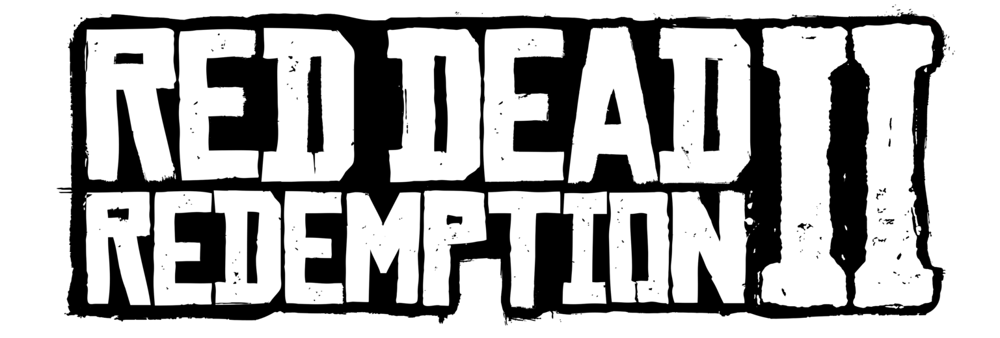
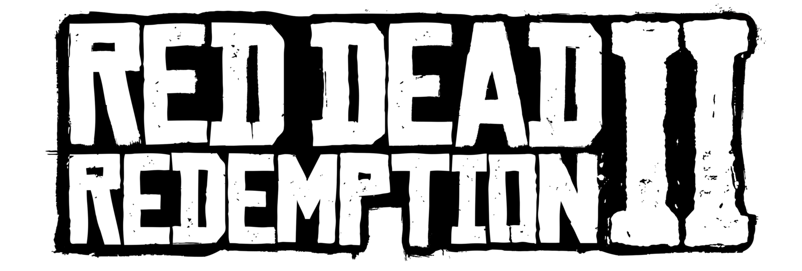
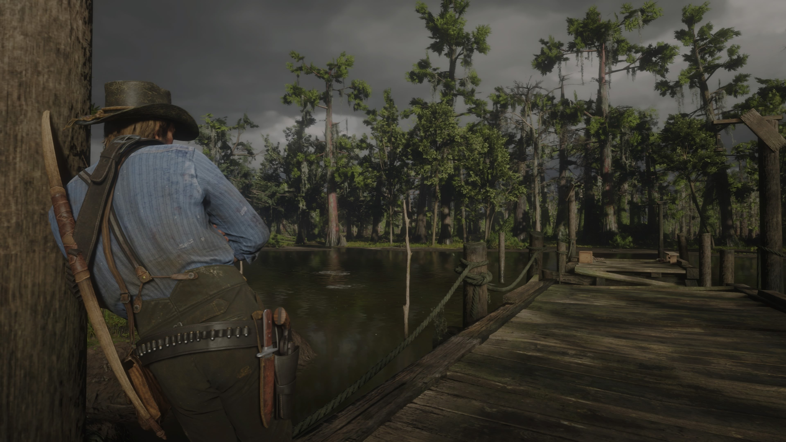
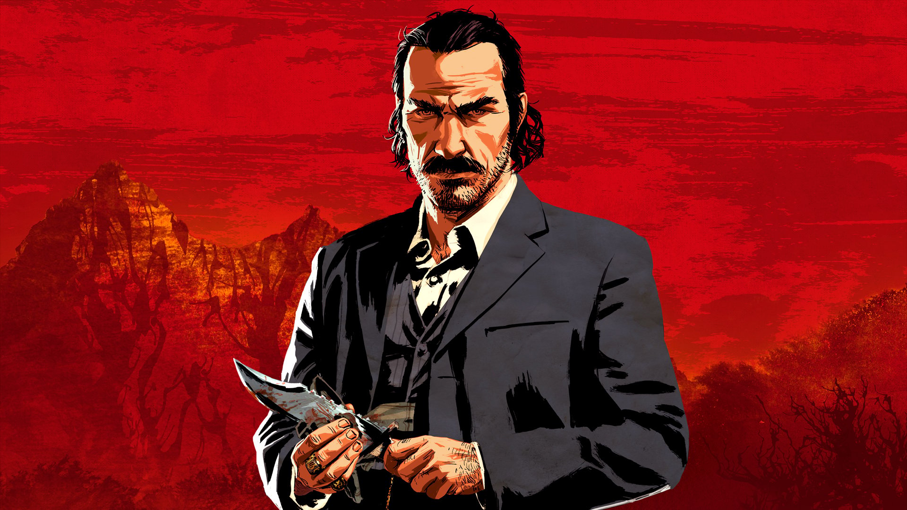
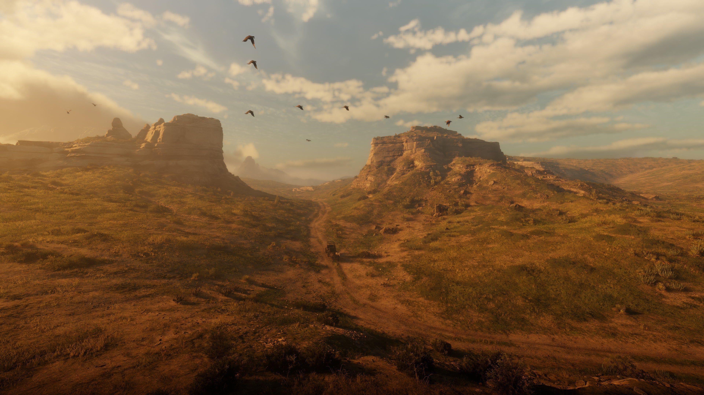

HISTORIA DEL JUEGO
Red Dead Redemption 2 (abreviado como RDR2) es un videojuego de acción-aventura de mundo abierto desarrollado y publicado por Rockstar Games. El juego es la tercera entrada de la serie Red Dead y una precuela del juego Red Dead Redemption de 2010. La historia está ambientada en una representación ficticia de los Estados Unidos en 1899 y sigue las hazañas de Arthur Morgan, un forajido y miembro de la pandilla Van der Linde, que debe lidiar con el declive del Salvaje Oeste mientras intenta sobrevivir contra las fuerzas gubernamentales, pandillas rivales y otros adversarios. El juego se presenta a través de perspectivas en primera y tercera persona, y el jugador puede recorrer libremente su mundo abierto interactivo. Los elementos del juego incluyen tiroteos, robos, caza, paseos a caballo, interacción con personajes que no son jugadores y mantener el índice de honor del personaje a través de elecciones y hechos morales. Un sistema de recompensas gobierna la respuesta de las fuerzas del orden y los cazarrecompensas a los crímenes cometidos por el jugador.
El desarrollo del juego duró más de ocho años, comenzando poco después del lanzamiento de Red Dead Redemption, y se convirtió en uno de los videojuegos más caros jamás creados. Rockstar reunió a todos sus estudios en un gran equipo para facilitar el desarrollo. Se inspiraron en lugares reales en lugar de películas o arte, y се centraron en crear un reflejo preciso de la época con los personajes y el mundo del juego. El juego fue el primero de Rockstar creado específicamente para consolas de octava generación, después de haber probado sus capacidades técnicas al portar Grand Theft Auto V. La banda sonora del juego incluye una partitura original compuesta por Woody Jackson y varias pistas vocales producidas por Daniel Lanois. El desarrollo incluyó un cronograma estricto de semanas de 100 horas, lo que generó informes de horas extras obligatorias y no remuneradas. Red Dead Online, el modo multijugador en línea del juego, permite que hasta 32 jugadores participen en una variedad de modos de juego cooperativos y competitivos. Red Dead Redemption 2 se lanzó para PlayStation 4 y Xbox One en octubre de 2018, y para Windows y Stadia en noviembre de 2019. Rompió varios récords y tuvo el segundo lanzamiento más grande en la historia del entretenimiento, generando 725 millones de dólares en ventas desde su primer fin de semana y superando las ventas de toda la vida de Red Dead Redemption en dos semanas. El juego recibió elogios de la crítica, con elogios dirigidos a su historia, personajes, mundo abierto, gráficos, música y nivel de detalle, pero algunas críticas a su esquema de control y énfasis en el realismo sobre la libertad del jugador. Ganó más de 175 premios al Juego del año y recibió muchos otros elogios de entregas de premios y publicaciones de juegos. Se considera uno de los títulos más importantes de las consolas de octava generación y uno de los mejores videojuegos jamás creados. Es uno de los videojuegos más vendidos, con más de 74 millones de copias enviadas.
PERSONAJES PRINCIPALES
Arthur Morgan
El protagonista principal, un hombre de pocas palabras pero gran corazón, leal a la banda pero con un creciente conflicto interno.
John Marston
Marston es un forajido huérfano, el cual fue adoptado por Dutch Van der Linde, uniéndose a su banda.

Dutch Van Der Linde
Dutch Van der Linde es el carismático, idealista e intelectual líder de la banda que lleva su propio nombre.
Mundo Abierto
El mundo abierto de Red Dead Redemption 2 ofrece una amplia gama de actividades para que los jugadores exploren y disfruten. Desde la caza de animales salvajes hasta el robo de trenes, este videojuego de mundo abierto ofrece una experiencia inmersiva en el viejo oeste. Los jugadores pueden participar en misiones principales y secundarias, así como entablar interacciones con los personajes no jugables que pueblan este vasto entorno. Con una atención meticulosa al detalle y una IA avanzada, el mundo abierto de Red Dead Redemption 2 proporciona un sinfín de opciones para explorar y experimentar en este emocionante entorno virtual. En este artículo, exploraremos qué tipo de actividades pueden llevarse a cabo en este cautivador mundo de juego.
1. Explorando el vasto mundo abierto de Red Dead Redemption 2 Red Dead Redemption 2 es un juego de mundo abierto increíblemente vasto y detallado, lleno de lugares por descubrir y aventuras por vivir. Explorar este vasto mundo puede ser una experiencia abrumadora para los jugadores nuevos, pero con un poco de orientación, podrás sacar el máximo provecho de tu tiempo en el juego. Primero, te recomiendo que te tomes tu tiempo para sumergirte en el mundo de Red Dead Redemption 2. No tengas prisa por completar la historia principal, ya que hay innumerables actividades y misiones secundarias para disfrutar. Utiliza el modo exploración para descubrir lugares ocultos, cazar animales, pescar en ríos y lagos, y simplemente perderte en la belleza de los paisajes del juego.
Información Adicional
Consigue el juego en Steam o mira el tráiler oficial.